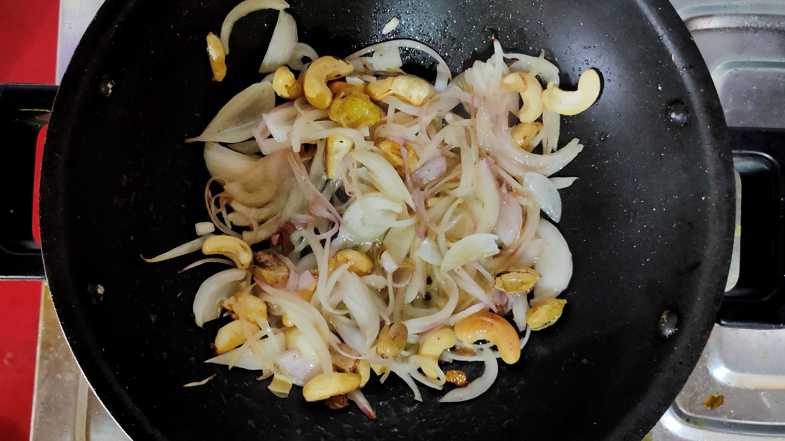
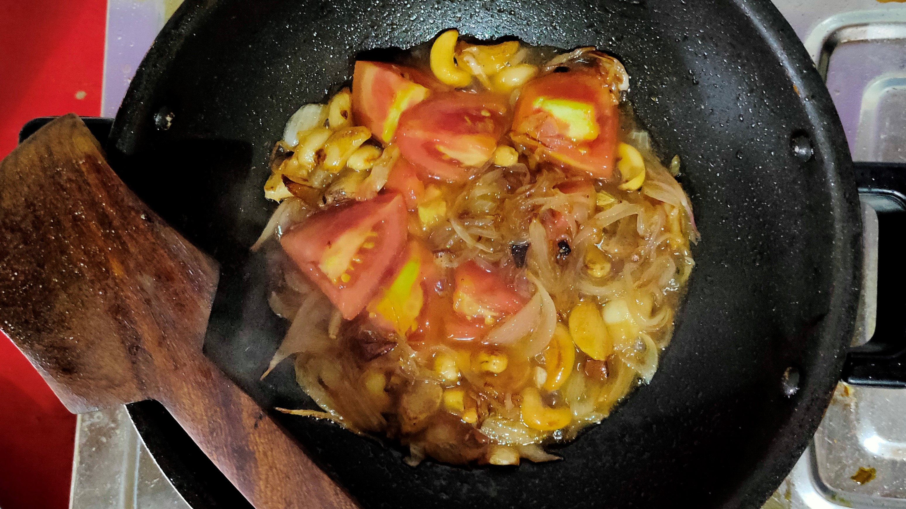
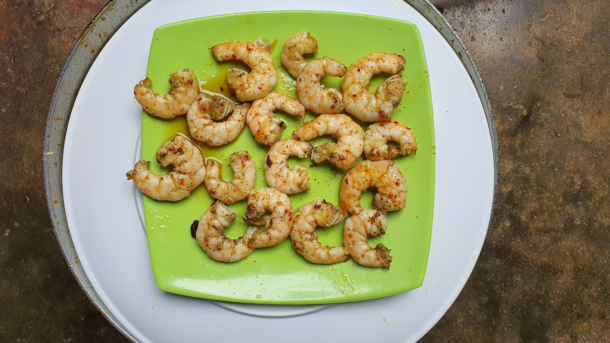
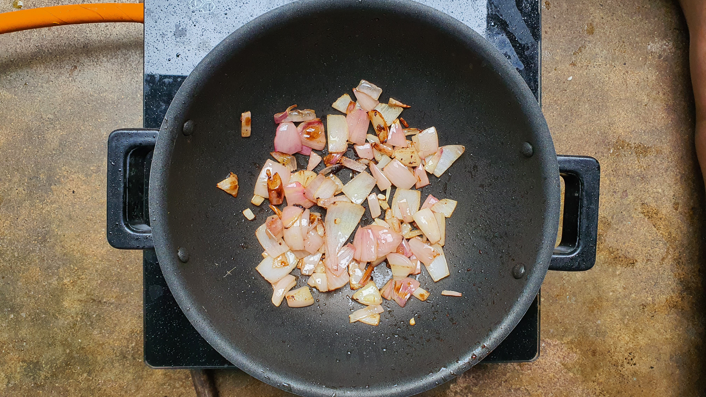
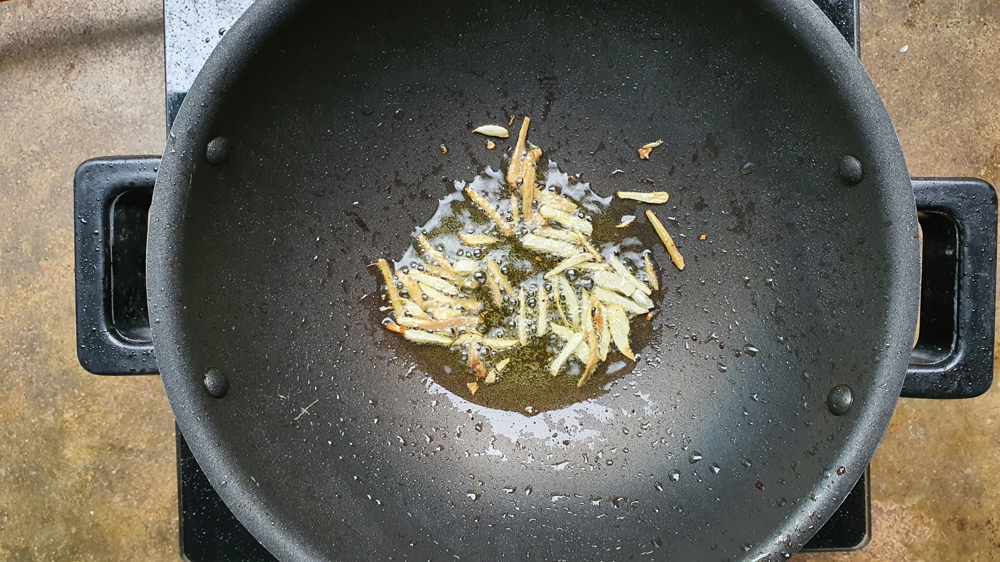
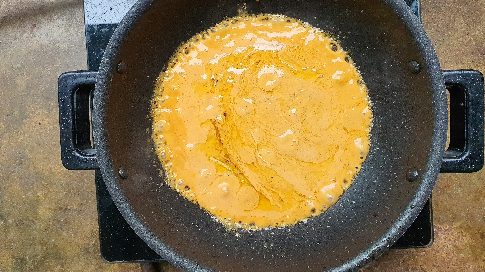
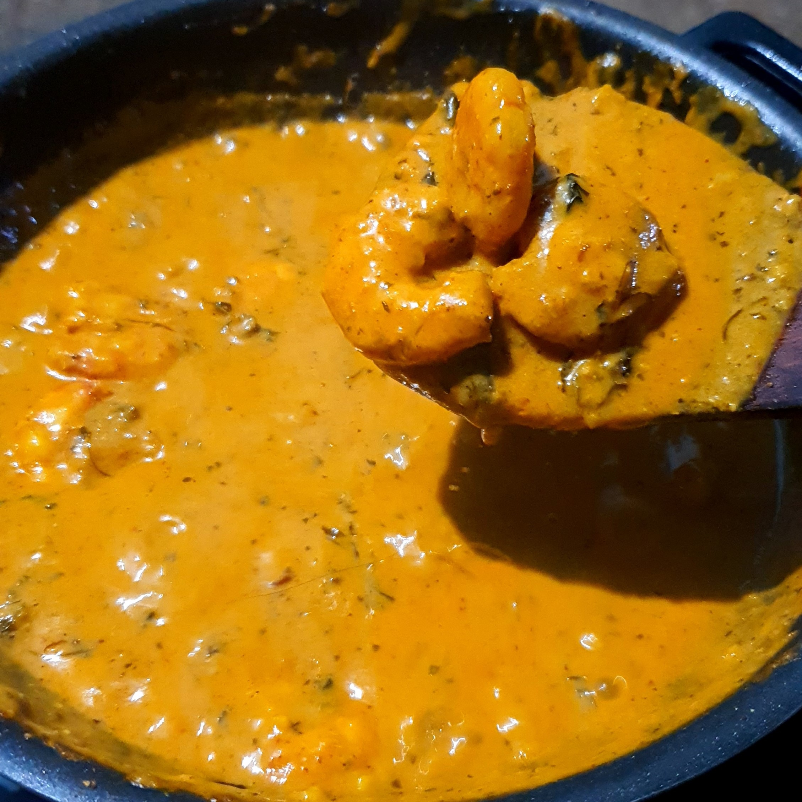

Well today in our kitchen it's time for Prawns. Yes aren't they delicious. By hearing the name our mouth gets watery. Today we are gonna make restaurant style delicious "Prawn Masala". So why the waiting? Let's get straight to our kitchens and start the dish.
Ingredients
- Prawns
- Onions & Tomatoes
- Cinnamon, Cardamom
- Cashew Nuts
- Butter
- Kasuri Methi
- Green Chillies, Ginger & Garlic
- Turmeric, Corriander Powder, Jira Powder, Kasmiri Chilli Powder
Recipie
Let's get strated. So first we need some prawns. Take 250 grams of medium to large prawns, wash them throughly, peel the shells. Then marinade the prawns with lemon, some salt and pepper and keep them aside for half an hour. Meanwhile while the our prawns are resting let's prepare the ingredients. Take 2 large Onions, 2 Tomatoes, slice them into small pieces. Take one small ginger, clean it and chop it to medium pieces. Take 6 to 7 garlic cloves. Take 2 pieces of Cinnamon and 3 Cardamom, and 6 Kashew nuts.
Heat a pan, add some oil to it. When the oil heats up, put the Cinnamon, Cardamom, Cashew nuts, Ginger and garlic into it and saute until they become a little brown. Now add the chopped onions and cook them until they become golden brown. Now add the chopped tomatoes and cover the lid of the pan. When the tomatoes become a little soft, add some water and coock them untill they are soft. Now cool down the mixture. Put the mixture into a blender and make a fine paste. So our base gravy is ready now.

Now it's time for the prawns. Heat a pan and add some butter into it. Put our marinated prawns into the butter and fry them in slow heat until they are golden brown. Take the prawns out and keep them aside. Then add some sliced onions into it. Saute them on high heat till they become crispy. Take out the onions from the pan. Let's make our final curry now.

Add some more butter into the hot pan and add some Jira (Cumin) and chopped Garlic and Ginger. While the butter is on slow heat, add all the dry ingredients to it (Turmeric, Corriander Powder, Jira Powder, Kasmiri Chilli Powder) and saute them a little. Don't overcook the Masalas. Add quickly our base gravy into the pan and give it a good mix. Cook the gravy until the oil separates, now add some salt to taste and a pinch of sugar to it. Add some water and mix it well. After the gravy starts to boil add our pre-fried prawns and onions into the gravy. Cover the pan and cook for 5 to 10 mins on a low heat.


We are in the end game now. Ha Ha... Just kidding. It's time to finish our curry. Open the lid and put some Kasuri Methi into it and a little cream. Give it a good stir. Now the Dish is ready to be served.
